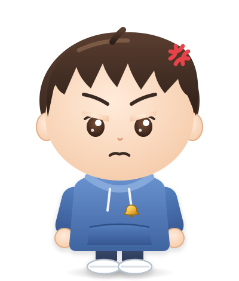
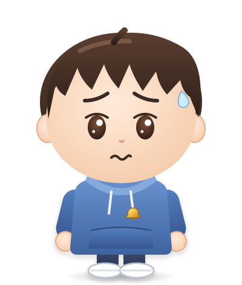

<!doctype html><meta charset="utf-8"><title>叮當</title>
<style>body{margin:0;background:linear-gradient(#f7f9fb,#e3eaf0);display:grid;grid-template-columns:1fr 1fr;gap:6px;padding:6px}figure{margin:0;text-align:center;font:12px sans-serif;color:#567}img{width:100%}</style>
<figure><figcaption>平常</figcaption></figure>
<figure><figcaption>微笑</figcaption></figure>
<figure><figcaption>開心（說話中）</figcaption></figure>
<figure><figcaption>傷心</figcaption></figure>
<figure><figcaption>嬲</figcaption></figure>
<figure><figcaption>驚訝</figcaption></figure>
<figure><figcaption>擔心</figcaption></figure>
<figure><figcaption>思考</figcaption></figure>
